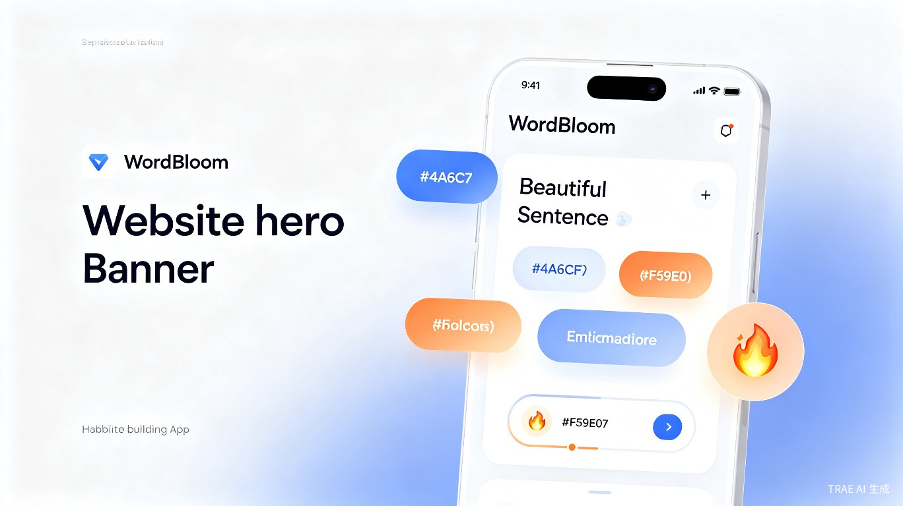
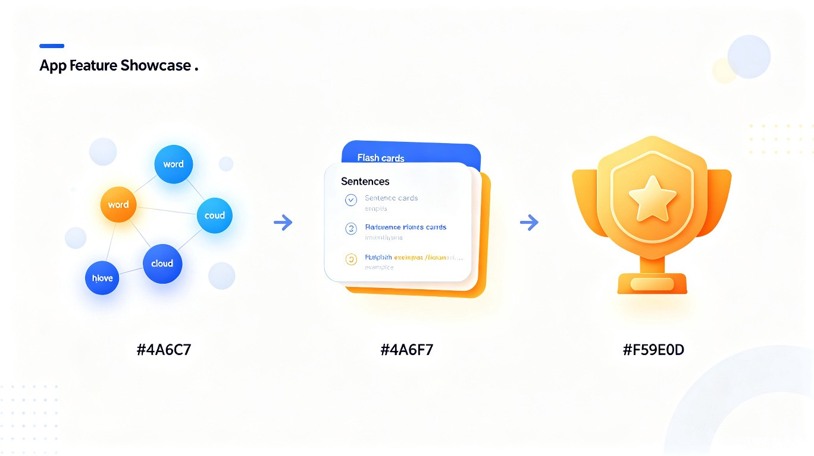
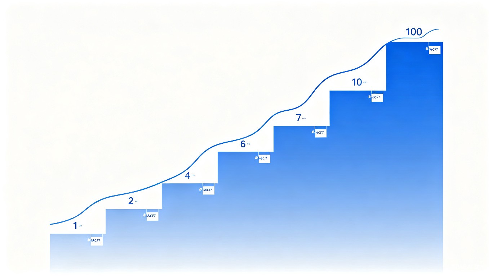

AI 驱动的英语生词记忆助手——让记单词像理财一样，每天积累一点"词汇资产"，在长期坚持中自然养成习惯。
WordBloom—— 英语生词记录与记忆强化工具
英语学习者在日常阅读、工作、生活中遇到生词时，往往随手查一下词典就过去了，缺乏系统性的记录和复习机制。更关键的是，大多数人学英语"一鼓作气，再而衰，三而竭"——热情来得快去得也快，难以长期坚持。
WordBloom 通过渐进式每日限额和游戏化成就系统，让用户像积累资产一样每天记录 1-10 个单词，用这些生词自动生成例句卡片来强化记忆，在不知不觉中养成习惯。
灵感来源于"复利思维"——每天进步 1%，一年后是 37.8 倍。单词记忆也是如此：与其一天背 100 个然后放弃，不如每天只记 1-3 个但坚持 100 天。WordBloom 把这种理念做成了产品体验：先让用户"少即是多"，再通过成就系统正向激励，而非靠意志力硬撑。
PWA（渐进式 Web 应用）—— 一个网址即可在手机、平板、电脑上使用，支持离线访问和安装到桌面，无需下载 App Store。

用户在地铁通勤时、午休间隙、睡前 5 分钟打开 WordBloom，快速记录当天遇到的 1-2 个生词，然后浏览由系统自动生成的例句卡片，在真实语境中强化记忆。整个过程不超过 3 分钟，轻松无压力。
查完词典就关掉，缺乏语境记忆和间隔复习，遗忘率极高
每天背 100 个单词的计划第 3 天就放弃，缺少渐进式引导
单词之间没有关联，不成体系，无法形成"词汇网络"

用户输入英文单词，系统调用 Free Dictionary API 验证单词真实性。每日可记录的单词数量遵循渐进规则：前 7 天每天 1 个，第 8-21 天每天 2 个，以此类推逐步升至每日 10 个。防止用户一开始过度投入导致放弃。
从用户单词资产中随机选取 B=min(单词数,3) 个单词，自动生成包含这些单词的自然例句。用户左滑切换到下一张卡片。每次最多 3 个单词组句，确保例句质量而非堆砌数量。
单词列表支持点击展开查看词典释义和例句。关系图谱以 Obsidian 风格力导向图展示单词之间的关联：实线表示同句出现过，虚线表示首字母相同，点线表示同日添加。
13 个成就覆盖不同阶段：初识英语（首个单词）、三日坚持、一周达人、习惯养成（21天）、月度之星、百日筑基、词汇收集者（50词）、词汇大师（200词）、满级达成（每日10个）等。在不同阶段持续激励用户。
| 阶段 | 天数范围 | 每日限额 N | 累计最多单词 | 设计意图 |
|---|---|---|---|---|
| 🌱 萌芽期 | 第 1-7 天 | 1 个 | 7 个 | 零压力入门，建立"每日打卡"仪式感 |
| 🌿 成长期 | 第 8-21 天 | 2 个 | 35 个 | 习惯初步形成，逐步增加学习量 |
| 🌳 发展期 | 第 22-42 天 | 3 个 | 98 个 | 21 天习惯养成后，稳步提升 |
| 🎯 进阶期 | 第 43-70 天 | 4 个 | 210 个 | 体验持续增长的成就感 |
| 🚀 加速期 | 第 71-105 天 | 5 个 | 385 个 | 解锁"升级了"成就 |
| ... | ... | ... | ... | ... |
| 👑 满级 | 第 316+ 天 | 10 个 | 1,925+ 个 | 解锁"满级达成"终极成就 |

WordBloom 设计了 13 个递进式成就，覆盖习惯养成、词汇积累、能力升级三个维度，在不同阶段为用户提供正向激励：
成就系统不是终点，而是旅程中的里程碑。每个成就的解锁条件都经过精心设计——前 3 天、7 天、21 天、30 天、100 天，恰好对应行为心理学中习惯养成的关键节点。用户不是在"完成任务"，而是在见证自己的成长轨迹。
Service Worker 实现离线缓存，用户在地铁等无网络环境也能查看已记录单词。支持添加到手机主屏幕，体验接近原生 App。
所有单词数据、每日记录、成就状态存储在浏览器 IndexedDB 中，无需后端服务器，用户隐私完全本地化。
基于 Canvas 2D 自研力导向图引擎，实时物理模拟节点间的排斥力和边吸引力，支持拖拽和缩放交互。
调用 Free Dictionary API 验证单词真实性并获取权威释义；内置模板引擎，从资产中随机组合单词生成自然例句。
将行为心理学中的"渐进式习惯养成"与语言学习结合，用科学方法对抗遗忘曲线。学生群体可以零成本获得一个结构化的单词积累工具。
降低英语学习的心理门槛。不需要制定庞大计划，不需要付费订阅，任何人打开浏览器就能开始。特别是在教育资源不均的地区，这是一个普惠的学习工具。
PWA 零分发成本，可通过广告或增值服务（AI 例句生成、个性化复习计划、学习报告）实现商业化。中国英语学习者超 4 亿，市场空间巨大。
WordBloom 不是又一个"背单词 App"，而是一个用行为设计对抗人性弱点的习惯养成工具——它不要求你有多努力，只要求你每天都来。
WordBloom 已部署上线，可立即体验：